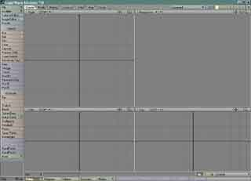

Lightwave
Overview
Author's Note
Everything I have said about the comparison between Lightwave and MAX is my experience only. I have used Lightwave for most of my young adult life and I have very little experience in MAX. My comparisons may sound biased and if anyone sees something that isn't true (IE not my opinion) then please, post a comment in the comments section and I will try to fix it.
Lightwave is a professional modelling and animating application designed by [Newtek]
Lightwave comes with 2 programs, Lightwave Modeler which is devoted to modelling, and Lightwave Layout which is devoted to animating. Most people might think this is a little inconvenient, but having 2 distinct programs for each job, means that the programs are more specialized. You don't see animating tools in the modelling program, because the modelling program is jammed with tools for modelling. Unlike MAX which displays the tools for both jobs in the same window, withlightwave, you can focus on a particular aspect without the interference of buttons from other areas.. As far as I can tell, Lightwave displays more buttons for functions that MAX does. Then again, and someone can correct me if I'm wrong, I don't know much about MAX. 

4 viewports: Right, Perspective, Front, Top |
Lightwave has 4 viewports that allow you to view your model from 7 different angles. Each viewport can be set to anyone of these angles. It is possible to set all viewports to the same angle, such as the front view, but why would you want to do that? Lightwave comes packaged with a ton of useful modelling, and animating tools, however, there are many more tools from 3rd party developers that can be bought or downloaded. Newtek also has plugins that can be purchased.
So, MAX is cool too, why should I look at Lightwave? Well, here's a quote from Newtek's site:
Unreal Tournament 2003 has a huge 3D object library that comes with UnrealEd: Unreal Tournament2003’s level editor. Many of these objects have been made at Digital Extremes using LightWave©.
You can do anything you want with Lightwave that you can do with MAX and in some cases, it's easier. Lightwave supports exporting your models to 3DS which is the format that the 3ds2unr utility uses. And, UnrealEd also supports the Lightwave object format as well. See the external link below to see how to get your Lightwave models into UnrealED.
The features list for Lightwave is way too big, so I've provided a link directly to their features page. On this page you will see that different aspects of Lightwave are divided into sections. Lightwave allows for fine control through the use of graphs. Using these graphs you can plot information depending on which tool you're using. Many tools for animating, and possibly modelling, or rendering [I'm not sure about the last 2 though] allow for the use of these such graphs. You can also see from this list, that graphs are not the only tools that have features listed. [Lightwave Features]
Tutorials
- Lightwave Modeler Visual Layout – Explains the different areas where the tools reside Work in Progress
- UV Mapping – UV Mapping in Lightwave is a breeze! Work in Progress
External Reference
- [What is Lightwave] Basically a page describing the selling points of Lightwave.
- [Lightwave Game Development] Lightwave comes with tools for developing today's games.
- [Newtek's Game Development Brochure] Another site explaining Lightwave's capabilities for game design.
- [Using Lightwave with UnrealEd] Tutorial on how to make your .LWO models into static meshes.
3rd Party Tools
- lwo2psk - convert lightwave-models & -animations to psk- & psa-files
Discussion
Mosquito: It sounds like Lightwave could be a big player in the world of game modelling applications. Although I haven't used it that way yet, in my research, I've learned a lot about it's hidden abilities. Expect to see some actual tutorials here soon. I'm an intermediate in the program.
Vailias: Love Lightwave. Do all my modeling in it so far. BTW Edited the link to be "Lightwave Modeler Visual Layout" since "Lightwave Layout" is the Animation side of the program set.  Just to keep those with some LW experience from getting confused.
Just to keep those with some LW experience from getting confused.
Ntmy: Added my tool as a 3rd party tool hope this is ok
Clintonman: Very nice. This tool works with Lightwave 9 beta. Here is another import/export for lightwave, but only the import seems to work properly. Choose the "LW7.0 compatible Plugins" link to get them.
http://www.troggpond.com/lwtools/index.html
Kazashi: I've been using that set of LW import/export plugins for a couple of years now, once you learn its nuances exporting works pretty well. There are a couple of minor issues, however the source code is available for anyone with C++ skills. Available [here]